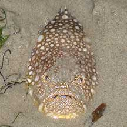
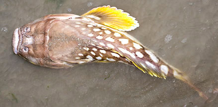
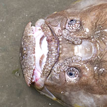
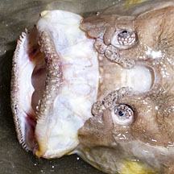
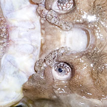
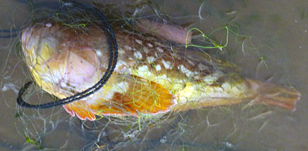

|
|
| fishes text index | photo index |
| Phylum Chordata > Subphylum Vertebrata > fishes > Family Uranoscopidae |
| Longnosed
stargazer Ichthyscopus lebeck Family Uranoscopidae updated Nov 2020
Where seen? This bizarre pop-eyed fish is sometimes seen on our Northern shores, usually buried in sand bars and sandy shores near seagrass areas with only their tiny eyes sticking out. A large one (about 30cm) that we rescued from a fish net immediately wiggled into the wet sand, leaving only its bulbous eyes peeping out. Sometimes, dead ones are seen washed ashore. What are stargazers? Stargazers belong to the Family Uranoscopidae. According to FishBase: the family has 8 genera and 50 species found in the Atlantic, Indian and Pacific oceans. Although some descriptions say there are two large spines near the pectoral fins that can inject a painful toxin, others say these fishes lack any venom-injecting spines. One genus, Astroscopus, has electric organs! It is said that the fishes only emerge from hiding at night. Some species have a worm-like filament on the floor of the mouth. This bait is wriggled when the mouth is opened, to lure unwary victims to their sudden deaths. |
 Usually half buried in the sand. Chek Jawa, Oct 01 |
 Changi, Jul 11 |
|
 Changi, Jul 11 |
 Protrusible mouth! |
 Elongated nostrils - wormy-looking things next to the eyes. |
| Features of the Longnosed stargazer: Up to 30cm long! It
is basically a bulky head with a tiny body. As its name suggests, its bulbous eyes
stare fixedly skyward. Its scientific name is derived from the Greek 'ourannos'
which means 'sky' and 'skopein' which means 'to watch'. Its huge mouth that also faces upwards, set
in a permanent frown. It
is identified by diagonally elongated nostrils (looks like a pair
of worms near and between the eyes). Body said canary yellow on the
underside, upperside brown with irregular white round or oval spots.
Pectoral and tail fins bright yellow with dark brown base. What does it eat? The Longnosed stargazer lurks buried in sand, only its eyes peeking out and the huge mouth just beneath the sand. Here it lies in wait, for unsuspecting fishes, octopuses and squids to wander by. On its lips, there are filaments and on its nose, elongated protrusions that resemble worms. These are probably used to lure prey. The prey is sucked up whole into its enormous mouth that can extend outwards (protrusible). |
| Longnosed stargazers on Singapore shores |
On wildsingapore
flickr
|
| Other sightings on Singapore shores |
 Was trapped in a driftnet and released alive. Changi, Jul 11 |
||
| Family
Uranoscopidae recorded for Singapore from Wee Y.C. and Peter K. L. Ng. 1994. A First Look at Biodiversity in Singapore. in red are those listed among the threatened animals of Singapore from Ng, P. K. L. & Y. C. Wee, 1994. The Singapore Red Data Book: Threatened Plants and Animals of Singapore. +from our observation
|
Acknowledgements
References
|